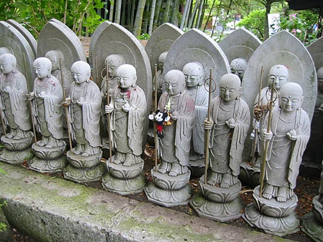
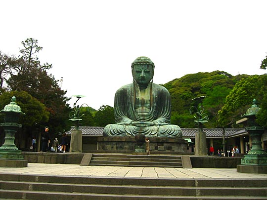
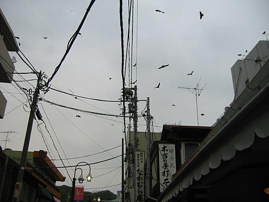

Photos from our second trip to Japan, 18 March–2 April 2005 are on Flickr
Japan, 18-28 April 2003
- Index
- Arrival, Day 1: Tsukiji Fish Market; Hama-Rikyu Gardens [1.66Mb]
- Day 1 (continued): DesignFesta [1.25Mb]
- Day 2: Meiji Shrine and inner garden; Harajuku; Nezu Institute; Aoyama cemetery [2.38Mb]
- Day 3: Ghibli Museum, Mitaka; Shinjuku [1.66Mb]
- Day 4: Hakone: Taisekan ryokan [1.81Mb]
- Day 5: Hakone: Taisekan; Hakone Museum of Art; ropeway to Owakudani; Lake Ashino-ko [1.93Mb]
- Day 6: Kamakura [4.37Mb]
- Day 7: Senso-ji temple; Asakusa; Joe [1.46Mb]
- Day 8: Koishikawa Korakuen garden; Seibu department store; Ginza [1.2Mb]
- Day 9: Shinjuku-gyoen gardens [2Mb]
- Day 9 (continued): Harajuku, Ueno Park and the Tokyo National Museum, Roppongi Hills [1.59Mb]
Thursday 24 April: Kamakura. Zen temples and shinto shrines
Fortune smiled on us in Kamakura... Rain was predicted (we had a tense argument about whether we should change our plans), but never arrived. Lovely weather all day, visibility good.
Must've walked over 20km and took over 200 photos today. Exhausted, but a very satisfying day. Followed route in our itinerary. Engaku-ji, Teiko-ji and Jochi-ji temples, Zeni-arai Benten Shrine, Sasuke-no Inari shrine, Hase-dera temple and the Great Buddha. Architecture and artifacts amazing, gardens far more still. The most breathtaking gardens we've ever been in. Gnarled feathery maples, characterful plums, wispy bamboo, mighty yellowwood and yew, enormous gingkos, serene camphors, soft, red-barked, straight and lofty cedars. Shrines carved into the cliffs.
Engaku-ji Temple
Largest of Kamakura's 5 great Zen temples
Near the entrance. Low angle due to steep steps I'm still ascending
Little plum trees
Tokei-ji Temple
"Divorce temple" — In the days before women were allowed to divorce their husbands, they could find sanctuary in the nunnery here. If they remained there for three years, their marriage was annulled.

More gnarled plum trees. They're actually full of small green plums. The last of their blossoms (and those of nearby cherry trees) still litter the ground.
One of countless Buddha statues we saw during the day, all with flower offerings before them
Beneath a tall gingko
The cemetery is on several levels up the hill, making for many views like this one
Enchanting patterns of overlapping translucent maple leaves
Amongst serene graves (one of them had no headstone, only a simple mound with an ancient little bonsai tree on top). I caught a whiff of cigarette smoke, which was suprising as there was no-one around...
...then saw the origin of the smoke. An offering to the dead (see inset above). Many of the stately graves also had unopened tins of beer or soft drinks on them.
Looking back down the sloping garden
A smaller inner garden outside a temple
Bamboo groves behind above temple
Jochi-ji Temple
From the sign at the entrance: "This temple is one of the five most prominent temples, ranking fourth on the list of Kamakura Gozan (Kamakura's Five Great Zen Temples). It was recorded that this temple was erected in 1280s by Morotoki, the grandson of Hojo Tokiyori, and established by a Chinese Priest. This temple possesses one of the Kamakura's Ten Celebrated Wells, the 'Kanro-no-ido' or 'Nectar Well' in the precincts."
Stairs ascending, and an avid Japanese photographer (wherever there are pretty blossoms, you'll find someone with a tripod)
The Japanese visitors are, if anything, even more enchanted than us by the remaining cherry blossoms. I can imagine the crowds that would've been there at the height of sakura season. Snowdrifts of blossoms still lie heaped on the ground.
Moss and bamboo textures
Everywhere there are alcoves carved into the cliff rocks, with these little stone markers stacked in them
Raccoon statues. You see these quite often

A tunnel carved through the cliff at one place
Some particularly beautiful grave markers
I loved this tiny weathered torii gate in front of an alcove in the cliff-face with a mossy little shrine in it
Forest path along a tunnel of trees with tree-roots as steps. The trees absorbed all sound and it was silent — the ground underneath was all firm clay, no stones or gravel. We never saw a soul, until at one shrine there was a large school group of noisy children. An 11-year old girl asked Kelly her name. Walking away, we heard her and her friend giggling and mimicking Kelly's way of saying konnichi-wa. A large eagle swooped through the crowd, making off with some food. I was amazed, but nobody else was, but later I saw they were as plentiful as crows.
Hiking trail: Kewaizaka Pass in the Genjiyama Park
We had decided to take the hiking trail to the Great Buddha (which Kamakura is famous for), instead of taking the main route through the town first. We were still afraid it was going to start raining, but it never did.
Near the start of the path. Perhaps my favourite photo of the whole holiday.
Tree-roots for a staircase
Occasionally views of Kamakura (including the sea) emerge from gaps between the trees
School group at Kazuharaoka shrine
Nearby, a headstone bathed in green light
This sign obviously shows the birdlife in the park. We saw the eagle at top left, which we thought was remarkable, until they proved to be as common as crows
Zeni-arai Benten Shrine
"Money-washing Benten" — Benten is a general lucky goddess, but at this shrine you can wash your money in the well and it reputedly doubles in value. You reach it through a long tunnel dug into the rock, and then another tunnel of torii gates. Being quite dark, most of the photos didn't come out very well.
Inside the cave shrine there are bunches and bunches of multicoloured origami cranes
The most beautiful shrine was the fox one (Sasuka-no Inari). Remote and quiet, with little moss-covered altarstones all over the place, with tiny white porcelain foxes and big moss-covered stone ones wearing red bibs.
Part of the walk was through unbelievably privileged/posh/pretty residential areas — a bit like Chiswick Mall in London. Inside one open garage was a large photo of a massive freighter — a shipping magnate's home?
Sasuke-no Inari Shrine
From the plaque: "The first shogun Yoritomo Minamote of the Genji clan ordered samurai Shigetada Hatakeyama to rebuild this shrine in the 12th century. He believed that the spirit enshrined here was a harbinger of his good fortune. Five deities are enshrined herein. The annual festival is held in February."
This was perhaps our favourite shrine in Kamakura. It's quite a hike from the main path, and there was nobody else there.
After a long walk, you find the entrance torii...
...that just carry on and on for another 50m or so.
Everywhere the little fox statues face you with their red bibs

There are countless of these little shrines around the place, with burning incense and tiny little porcelain fox figurines
This is the general impression of the area. Like a temple without walls.
Somehow we managed to miss the route to the Daibutsu (Great Buddha) and reached the Hase-Dera temple first. Lucky, though, since we were famished and tired at this stage and had lunch in the temple pavilion with a 180-degree view over the coastal town and sea.
Late lunch at Hase-dera Temple
Kamakura rooftops towards the sea. Many surfers in the water. This was the view in front of us while having our late lunch.
Rice balls for dessert. One of our staple foods in Japan.
Hase-dera Temple
Contains a shrine to Jizo, guardian of children — as a result the dominant feature of this temple are the crowds of tiny statues erected to children who had died.
Classic tree shape near the entrance
Garden and ponds with carp and turtles
All the peonies we saw had umbrellas protecting them from the sun
The 1274 temple bell

Some of the countless little statues to Jiro. Some of them have babies' bibs, or toys hanging from their necks. They commemorate babies that died, or were stillborn, or aborted. The effect is rather chilling.
Rows upon rows of statues. The ones at the back are actually smaller, giving a sense of false perspective.
The garden, looking back. More umbrellas visible, shading the peonies
The Buddha was very impressive, clean and perfectly proportioned — a postcard-perfect image from every angle. Then we had a purple sweet-potato flavoured ice-cream cone, and caught a train into central Kamakura. Walked up the main boulevard (getting directions from a nice rickshaw guy) to the Tsurugaoka Hachiman-gu Shrine.
Daibutsu (giant Buddha statue)
Cast in 1252, considered the finest giant Buddha statue in Japan

One of probably a thousand identical photos taken that day
Light purple sweet-potato ice-cream. Delicious.

Those are all eagles wheeling overhead
Wakamiya-Oji, the central boulevard of Kamakura. Lined with cute shops either side, which we didn't have the time or energy for anymore.
By this time the remaining temples were closed (and we were about dead on our feet), but we did see the Tsurugaoka Hachiman-gu courtyard, and the enormous 700-year old gingko tree.
Tsurugaoka Hachiman-gu Shrine
Dedicated to the god of war, built 1063, approach path bridge between lotus ponds
The picturesque little stone bridge between the lotus ponds. Pine tree pretending there's a wind blowing.
Temple grounds. In the background you can see the 700-year old gingko tree sticking out.
An assasination took place beneath this tree in 1219. It looks like a mountain. Even has wooden stalagmites hanging down from its gnarled branches.
At all the Zen temples, you can have your fortune foretold with a small donation. You shake a metal jar until a stick with a number on emerges from a little hole. You open the drawer indicated by the number. Inside you'll find your fortune written on a piece of paper. If you don't like your fortune, you can nullify it by tying it to this structure (as Kelly was forced to do the next day).
In the background, sake barrels.
Beautiful vintage sake barrels. And at lower left, some boxes of beer from the local liquor store.
Then a very long walk back to Kita-Kamakura station.
Not the end of the evening yet! Exciting shabu-shabu dinner at Genkaya in funky and lively Harajuku area, but we had a hard time finding it due to unhelpful guidebook instructions.
Shabu-shabu dinner back in Tokyo
You get as much thinly-sliced raw beef and vegetables as you can eat in 1½ hours (when anything runs out, you press a buzzer to signal you need replenishment), and a tureen of hot water with kelp for flavour on a hotplate.

You cook your meat and vegetables and meat in the boiling water, then mix it nicely together in your little dipping bowl. (I'm not saying that's how it should be done, but that's what we did.) Addictive.
Next: Day 7: Senso-ji temple; Asakusa; Joe